Part 2 · Spatial heterogeneity · Chapter 2
LISP
Local indicator of stratified power
The question
Where does a variable explain my response, and how strongly there? Does its explanatory power change across the study area?You need
One point layer or table with longitude and latitude in WGS84 degrees, a numeric response y and one or more numeric explanatory variables. At least 30 complete rows.You get
At every location, the local q and its p value for each variable, for pairs of variables and for all variables together, as maps, box plots and a table that sets them against the global q.1The method
The idea
The geographical detector (Chapter 1) gives one q for a whole study area: the share of the variance of y that the strata of a variable explain. One number hides the places where the variable matters a lot and the places where it does not matter at all. LISP computes the same q locally: around every location it takes a window, discretises each variable inside that window, and computes q and its p value there. The result is a map of explanatory power for each variable.
Local extent κ = multiplier × a
a is the effective range of the semivariogram of y: the distance up to which values of y are spatially related. The window of a location holds all points within κ of it (at least the 10 nearest). The paper's default multiplier is 2.
The size of the window is not chosen by hand. It comes from the response itself: the semivariogram of y is fitted with an exponential model, and its range sets κ.
What is computed in each window
| Result | Strata | Fields |
|---|---|---|
| Local q of each variable | Quantile classes of the variable inside the window (4 by default) | q_<x>, sig_<x> |
| Local power of a pair, ω1, ω2, … | The two variables' classes crossed. The variable with the highest mean local q is paired with the next-ranked ones. | omega1…, sig_omega1… |
| Local power of all variables, ω0 | Zones of a regression tree of y on all variables | omega0, sig_omega0 |
q and p are computed as in the R packages GD and localsp. A table then sets the local values against the global q of each variable, computed once over all points.
When to use it
- You have run a geographical detector and want to know where each variable's power is high or low.
- You suspect that the drivers of y differ between parts of the study area.
- You have point data with enough points for every window to hold a few dozen of them.
Where it has been used
| Field | Response y | Spatial unit | Study |
|---|---|---|---|
| Glaciology | Change of glacier thickness, 2000 to 2020 | Gridded glacier unit | Hu et al. (2024) |
| Urbanization | Composite urbanization index | County | Sun et al. (2026), with geocomplexity patterns as extra variables, a step outside Heterra |
Any set of point locations with one numeric response and several continuous explanatory variables fits.
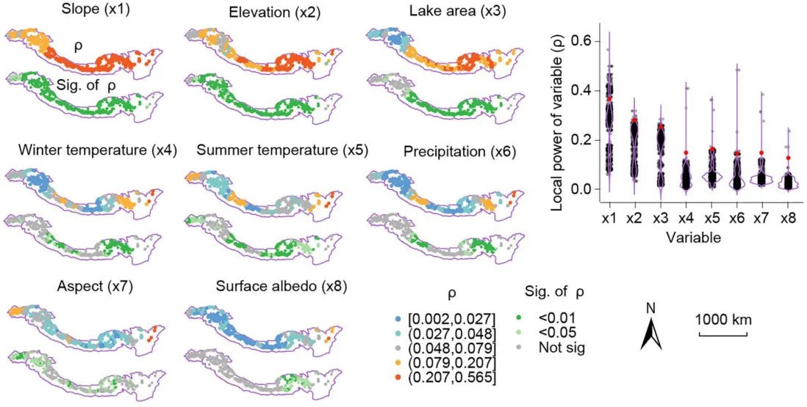
Keep in mindq rises with the number of strata, so compare like with like: single variables with each other, pairs with each other. A pair or ω0 always has more strata than a single variable, and a higher q for that reason alone. q is a share of the local variance of y, not a coefficient, and it does not show causation.
2In Heterra
2.1 Prepare your data
One layer with one row per location: points, polygons, a regular grid or a table (Part 1 shows how to add data). Since version 1.6.0 a polygon layer can be used directly. The coordinates are two fields you choose; for a layer with geometry you can also choose Geometry X and Geometry Y, which for a polygon is a point inside it.
| Field | Type | In the example |
|---|---|---|
| Longitude, latitude | Numbers, WGS84 degrees | lon, lat |
| Response y | Number | y |
| Explanatory variables | Numbers, one or more | slope, elevation, lake_area, precipitation, summer_temp, winter_temp, aspect, albedo |
| Boundary (optional) | A polygon layer | lisp_boundary: the outline drawn on the maps in the charts. All points stay, and it changes no result. |
The example has 500 simulated points in the study area of the LISP paper, the Greater Himalayas, with eight covariates named after the paper's variables. The values and the boundary are simulated, not observations, so the numbers illustrate the tool and do not describe a real study.
2.2 Run the example, step by step
Open the tool from the Toolbox (Spatial heterogeneity → LISP), click Tutorial, then Load Example. The points and the boundary appear on the map, and the panel on the right is filled in for you.
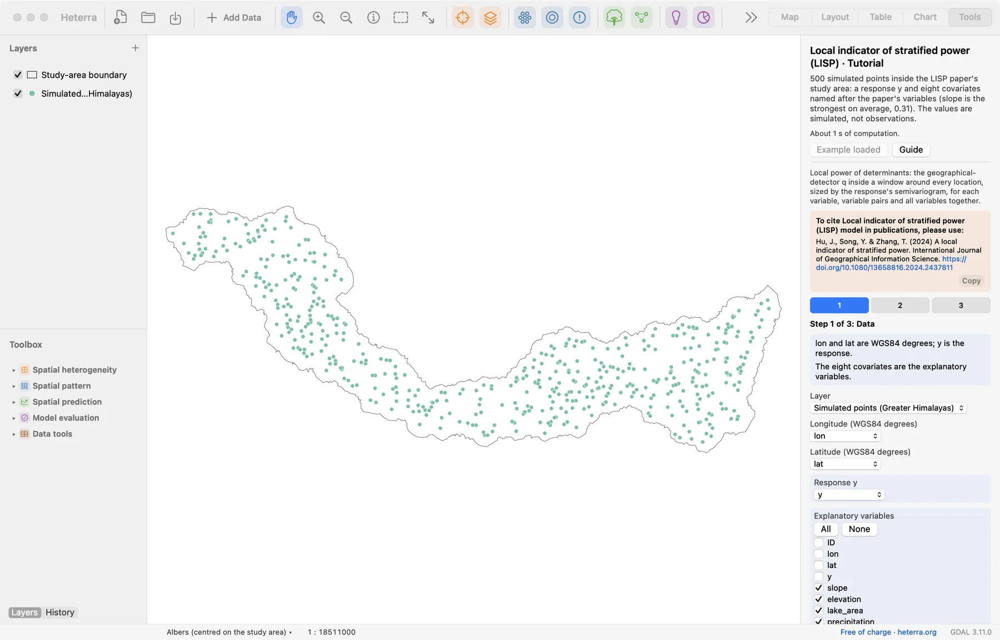
The panel has three steps. Next moves on; Run appears at the last step, because only that step computes.
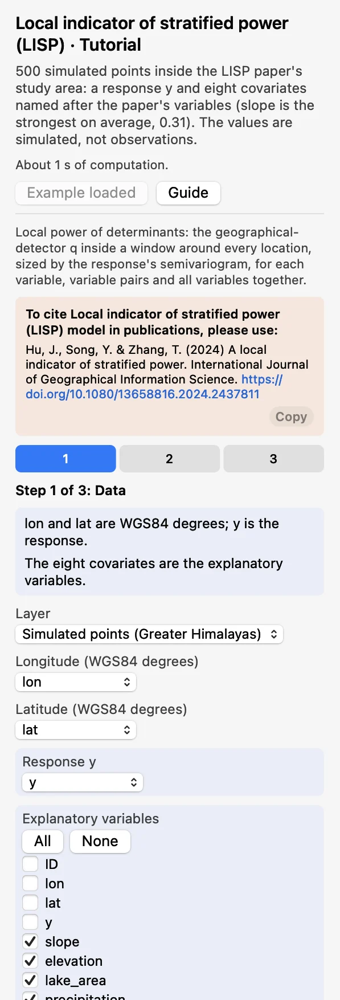
DataChoose the layer, Longitudelon, Latitudelatand the Response yy, and tick the eight Explanatory variables. The boundary is optional.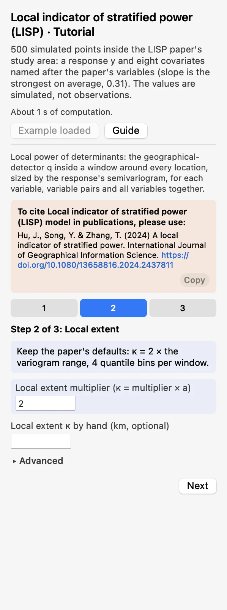
Local extentKeep the Local extent multiplier at 2, so that κ = 2 × the range a. Leave Local extent κ by hand (km, optional) empty.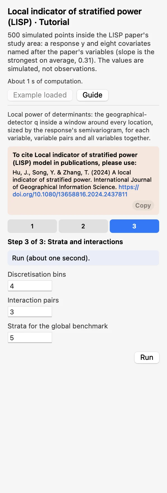
Strata and interactionsKeep 4 Discretisation bins, 3 Interaction pairs and 5 Strata for the global benchmark. Click Run.
The run takes about one second. The Chart page opens with the maps of the variable pairs, and the panel lists every result under Outputs: the local fields, then the tables, then the figures. A green line says that the results match the reference results computed with R. The local fields are added to a copy of the layer, which appears in the layer list.
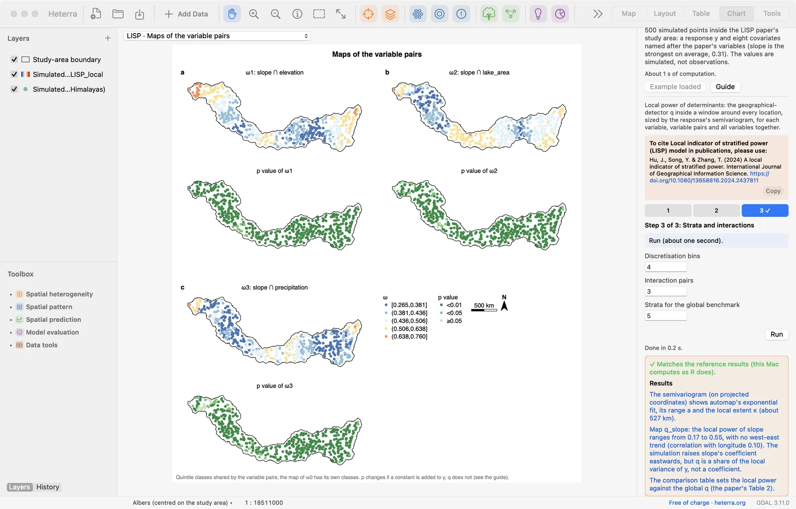
2.3 With your own data
- Add your points (Add Data), open LISP from the Toolbox and choose the layer, the coordinate fields, y and the variables in step 1.
- Start with the defaults: multiplier 2, 4 bins, 3 pairs. After the run, look at the semivariogram first and at the window sizes in the table Semivariogram fit and local extent.
- Without a coordinate system on the layer, set Map units under Advanced so that the maps get a scale bar and a north arrow. It changes only the charts.
- If the run warns that κ is at least the largest distance between points, every window holds all locations and the local values are the same everywhere. Type a distance in Local extent κ by hand (km, optional) in step 2 and run again (see below).
- Coordinates must be WGS84 degrees; projected coordinates are rejected.
- With a polygon layer the maps in the charts draw the polygons, in the same classes and colours as for points. Nothing is computed from the shapes: the location of a polygon is the pair of coordinates you chose in step 1.
- Rows with a missing value in any selected field are dropped, and their result fields stay empty. At least 30 complete rows are needed.
- If the variogram fit fails, y may have no spatial structure at these distances. The advanced option Variogram fit: Grid search + least squares, with its own cutoff and bins, is an alternative.
- The run time grows with the number of points times the window size: tens of thousands of points take seconds to minutes.
- Column names and file names are best written with English letters, digits and underscores.
3Reading the results
Read the results in this order: the semivariogram first (is the window sensible?), then the box plots and the comparison table (which variables matter, on the whole?), then the maps (where?).
3.1 Semivariogram and local extent
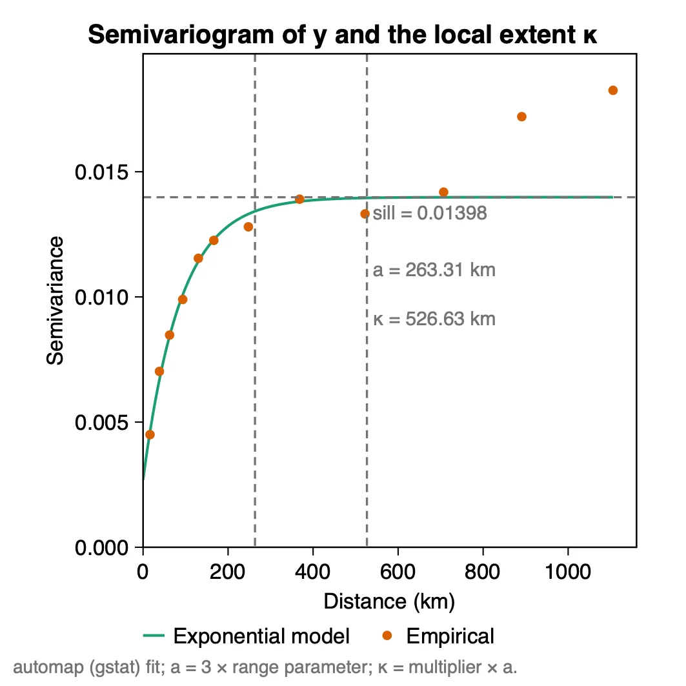
What it shows. How the difference between values of y grows with the distance between points. The semivariogram is computed on an automatic Albers projection of the coordinates, in km, and fitted as the R package automap does. In the example the model rises from a nugget of 0.0027 to a sill of 0.0140; its effective range a is 263 km, so κ = 2 × a = 527 km. The table Semivariogram fit and local extent holds these numbers and the window sizes: 47 to 194 points, 138 at the median.
How to read it. The dots should follow the curve up to the range and then level off, as they do here up to about 700 km; the two last dots lie above the sill, beyond κ. Then check the windows. Each window is cut into 4 classes for a single variable and into more for a pair, so a window of a few dozen points is small: here the smallest has 47. If the windows are too small, raise the multiplier; if every window covers most of the study area, the local values can hardly differ from the global one.
When the semivariogram has no sill. Some variables keep rising over the whole study area. The fitted range is then far larger than the area, no multiplier brings κ back inside it, and the run warns that every window holds all locations. Since version 1.6.0 you can set the local extent yourself: type a distance in km in Local extent κ by hand (km, optional). The semivariogram is still fitted and drawn, the table keeps the fitted range next to your κ, and the caption of the figure and the log say that κ was set by hand. Heterra does not suggest a value: choose a distance that has a meaning in your study and gives windows of at least a few dozen locations, and report it as your own choice. This option is not part of the method of Hu et al. (2024).
"The local extent was set to twice the effective range of the exponential semivariogram of y (a = 263 km, κ = 527 km; Hu et al. 2024). The local windows held 47 to 194 points (median 138)."
3.2 Local power and the comparison table
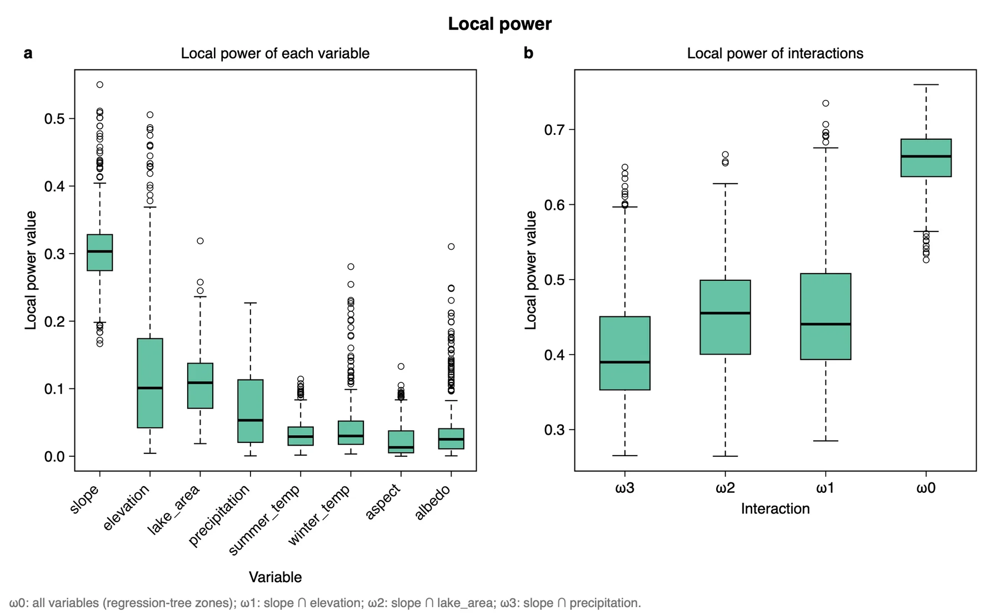
What it shows. The spread of the local values. The table Local and global power of determinants (the paper's Table 2) gives the same in numbers, with the share of locations where p < 0.05 and the global q:
| Variable or pair | Local mean | Local min to max | p < 0.05 (%) | Global q |
|---|---|---|---|---|
| slope | 0.306 | 0.167 to 0.550 | 100 | 0.321 |
| elevation | 0.127 | 0.004 to 0.506 | 61.4 | 0.104 |
| lake_area | 0.107 | 0.019 to 0.319 | 76.4 | 0.091 |
| precipitation | 0.067 | 0.001 to 0.227 | 39.8 | 0.043 |
| winter_temp | 0.041 | 0.003 to 0.281 | 18.6 | 0.018 |
| albedo | 0.037 | 0.001 to 0.310 | 9.0 | 0.011 |
| summer_temp | 0.033 | 0.002 to 0.114 | 10.2 | 0.010 |
| aspect | 0.024 | 0.000 to 0.133 | 11.6 | 0.008 |
| slope ∩ elevation (ω1) | 0.455 | 0.285 to 0.735 | 100 | 0.431 |
| slope ∩ lake_area (ω2) | 0.454 | 0.265 to 0.667 | 99.0 | 0.436 |
| slope ∩ precipitation (ω3) | 0.408 | 0.265 to 0.650 | 97.6 | 0.361 |
| All variables (ω0) | 0.661 | 0.526 to 0.760 | 100 | 0.564 |
How to read it. Compare within a group. Among the single variables slope leads, with a mean local q of 0.31, and it is significant everywhere. The range matters as much as the mean: elevation explains 13% on average but up to 51% somewhere, which a global q of 0.10 does not show. A variable with a small global q can still be locally relevant (albedo: global 0.011, local maximum 0.31, significant at 9% of the locations).
Do not read the step from single variables to pairs to ω0 as a gain. With this example's windows and 4 bins, the mean local q after shuffling the variables can serve as a baseline: about 0.025 for a single variable, 0.14 for a pair and 0.38 for ω0. The zones of ω0 are grown from y itself and reflect its spatial structure; ω0 can serve as a reference for the other values. The share with p < 0.05 compares variables on the same y. To compare different analyses, keep the unit and the zero of y the same, because p changes when a constant is added to y, while q does not.
"Slope has the largest local power of determinant (mean 0.31, range 0.17 to 0.55; significant at all locations, p < 0.05), followed by elevation (mean 0.13, significant at 61% of the locations) and lake area (0.11, 76%). The local power of elevation ranges from 0.004 to 0.51, against a global q of 0.10."
3.3 Maps of the local q
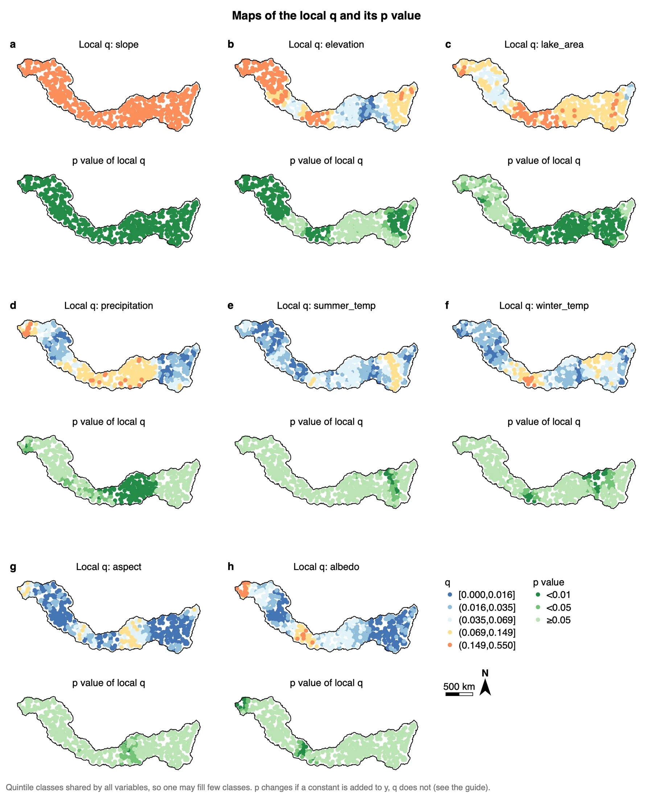
What it shows. Where each variable explains y. The q maps use five quintile classes shared by all variables (the table Map classes lists the breaks: 0.016, 0.035, 0.069 and 0.149), so the colours can be compared between maps. The p maps have three classes: p < 0.01, p < 0.05 and p ≥ 0.05.
How to read it. Read each q map with the p map below it: a high q counts where it is also significant. Because the classes are shared, one variable may fill few of them: slope is in the top class at every location, since its smallest local q (0.167) is above the last break. For elevation, the top class and p < 0.01 cover the west of the area and smaller parts further east, and the centre is not significant. For the pattern inside one variable, map its field yourself: q_slope ranges from 0.17 to 0.55 with no west–east trend, although the simulation raises the coefficient of slope eastwards. q is a share of the local variance of y, not a coefficient.
"The local power of elevation is spatially uneven (Figure X b): it is mostly above 0.15 and significant (p < 0.01) in the west of the study area, and is not significant in the centre. Overall it is significant at 61% of the locations."
3.4 Maps of the variable pairs
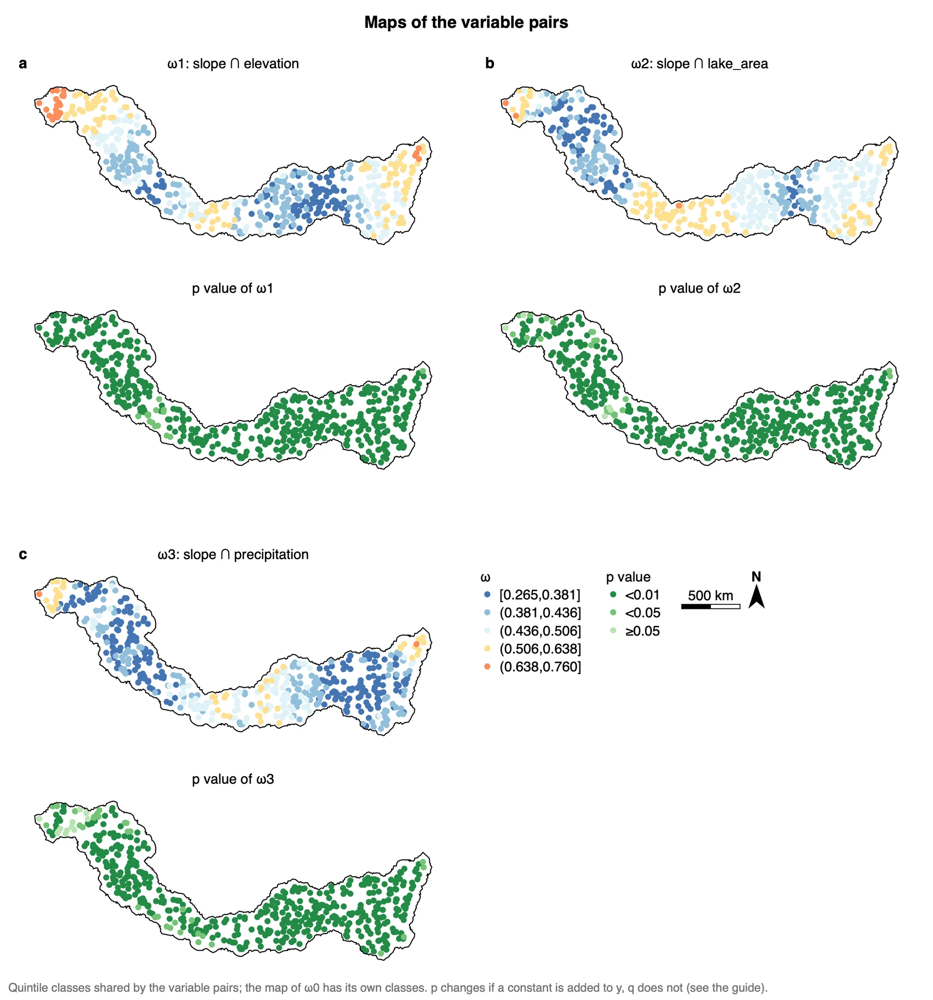
What it shows. The local power of slope crossed with each of the next three variables. The table Variable pairs says which pair each ω is. The three maps share one set of quintile classes, from 0.265 to 0.760, different from the classes of the single variables.
How to read it. Compare the pairs with each other, not with the single variables. The pairs have about the same mean (0.455, 0.454 and 0.408) but different patterns: slope ∩ elevation is highest at the western end, slope ∩ lake_area in the south. Nearly all locations are significant, as expected when one variable of each pair is slope.
"The local power of slope ∩ elevation (mean 0.46, range 0.28 to 0.73) and of slope ∩ lake area (mean 0.45) is significant at 99% of the locations or more; the two pairs peak in different parts of the study area (Figure X)."
3.5 Maps of ω0
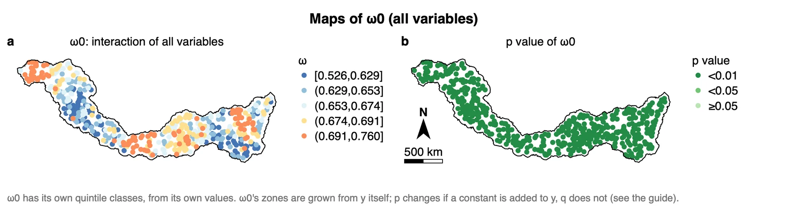
What it shows. The local power of all variables together, on regression-tree zones. This map has its own classes, from 0.526 to 0.760, taken from its own values.
How to read it. ω0 is high everywhere and p < 0.01 at every location, which is expected: the tree's zones are grown from y. Use the map to see where the variables together describe y better or worse, and use ω0 as an upper reference for the single variables and pairs, not as a result to rank against them.
"All variables together (ω0, regression-tree zones) reach a mean local power of 0.66 (range 0.53 to 0.76). Because these zones are derived from y, ω0 is reported as a reference only."
Export a figure from the Chart page as PDF or SVG (vector) or PNG at 300 dpi; Data CSV saves the numbers behind it. Export results in the panel writes a report of the run with the method, the steps, the figures and the tables (Part 1).
3.6 Reading the results together
The outputs tell one story in steps: how large "local" is (the semivariogram and κ), which variables matter on the whole and how much their power varies (the box plots and the comparison table), where each variable is strong and significant (the maps of the local q), and with which other variable (the maps of the pairs). Read them in this order:
- Semivariogram and local extent: check that the curve levels off and that the windows hold enough points.
- Local power and the comparison table: the ranking of the variables, the range of each local q, and the local values against the global q.
- Maps of the local q: where each variable explains y, read with the p map below it.
- Maps of the variable pairs: where two variables together explain y, compared between pairs.
- Maps of ω0: a reference for all variables together, not a result to rank.
What LISP is notIt is not a local regression: it gives no coefficients, no direction of an effect and no predicted values. It measures how much of the variance of y inside a window the strata of a variable explain. It also does not name the type of an interaction. For a map of predicted values, use a method of Part 4.
3.7 From the results to a manuscript
| Section | What to write | From Heterra |
|---|---|---|
| Methods | The local q; how the local extent is set (semivariogram model, range a, multiplier, κ); the number of bins; how the pairs and ω0 are formed | The settings of the run (in the exported report); table Semivariogram fit and local extent; table Variable pairs |
| Results | Follow the order of the analysis: local extent, ranking of the variables, maps of the local q, pairs. One finding per subsection, each with a number | Figures Semivariogram and local extent κ, Local power, Maps of the local q and its p value and Maps of the variable pairs; table Local and global power of determinants |
| Discussion | Sort the variables into three groups: local mean close to the global q with a narrow range (the local view adds little); a wide local range (the global q hides the variation); not significant globally but significant in parts of the area (found only locally). Name the part of the area each conclusion depends on. Say whether the ranking holds with another multiplier or number of bins | Table Local and global power of determinants; the maps; a second run with another setting |
- Do not compare q values obtained with different numbers of bins: finer strata explain more variance by construction.
- A semivariogram that keeps rising and has no sill gives an unstable range, and with it an unstable κ. Interpret such a run with care. If you set κ by hand, say so and give the reason for the distance; do not try several distances and keep the one whose maps you prefer.
- Report the median number of points in a window. Below about 30, the classes inside a window hold too few points.
- Only the leading variable is paired with the next-ranked ones. A variable further down the ranking is tested in a pair only if you raise Interaction pairs.
4Exercises
Exercises 1 to 3 use the example. Exercise 4 is for your own data.
Exercise 1Read
Run the example with its settings and open the table Local and global power of determinants. Which single variable has the second-largest mean local q? Which has the second-largest share of locations with p < 0.05? Which variables have a global q that is not significant at the 0.05 level?
Answer
Elevation has the second-largest mean (0.127), but lake_area has the second-largest share of significant locations (76.4%, against 61.4% for elevation). The global q is not significant for winter_temp (p = 0.064), albedo (0.25), summer_temp (0.30) and aspect (0.40).
Exercise 2Change a setting
In step 2, set the Local extent multiplier to 1 and run again. What is κ now? Which numbers of the comparison table can change, and which cannot? Look at the window sizes in the table Semivariogram fit and local extent before you trust the new maps.
Answer
The range a comes from the semivariogram of y and stays 263 km, so κ = 1 × a = 263 km. The windows are smaller, so every local value (mean, minimum, maximum, share with p < 0.05) can change. The global q is computed over all points and stays the same. Smaller windows show finer patterns but leave fewer points per class, so fewer locations may be significant. Both runs stay in History.
Exercise 3Interpret
A colleague writes: "All variables together reach a local power of 0.66, twice that of slope (0.31), so the other seven variables add as much explanation as slope." Is the sentence justified?
Answer
No. q rises with the number of strata, and ω0 is computed on regression-tree zones grown from y itself. With shuffled variables the mean local q is already about 0.38 for ω0, against about 0.025 for a single variable, so the two numbers are not on the same footing. Compare single variables with each other and pairs with each other, and report ω0 as a reference.
Exercise 4Your data
Run LISP on your own points with at least three explanatory variables. Write three sentences for a results section: one on the local extent (a, κ and the window sizes), one on the ranking of the variables (mean local q, its range and the share with p < 0.05), and one on where the leading variable is strong and significant. Export the maps of the local q as PDF.
Checklist
Are the coordinates WGS84 degrees? Does the semivariogram level off, and does the smallest window hold enough points for the number of bins? Did you compare single variables only with single variables? Did you read every q map together with its p map? Did you report the local range next to the global q?
References
- Hu, J., Song, Y. & Zhang, T. (2024). A local indicator of stratified power. International Journal of Geographical Information Science. doi:10.1080/13658816.2024.2437811
- Song, Y., Wang, J., Ge, Y. & Xu, C. (2020). An optimal parameters-based geographical detector model enhances geographic characteristics of explanatory variables for spatial heterogeneity analysis: cases with different types of spatial data. GIScience & Remote Sensing 57(5): 593–610. doi:10.1080/15481603.2020.1760434 (the q statistic)
- Sun, Y., Wu, G., Song, Y. et al. (2026). Local effects of pattern interactions in driving urbanization. Int J Appl Earth Obs Geoinf 146: 105072. doi:10.1016/j.jag.2025.105072
- R package localsp: cran.r-project.org/package=localsp
- R package GD: cran.r-project.org/package=GD
Heterra guide, for version 1.6.0. © 2026 Yongze Song. Documentation and tutorial data: CC BY 4.0.